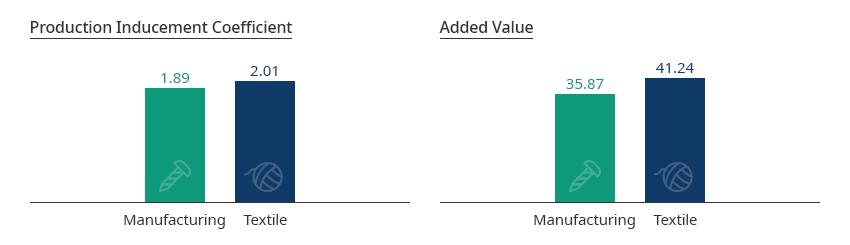
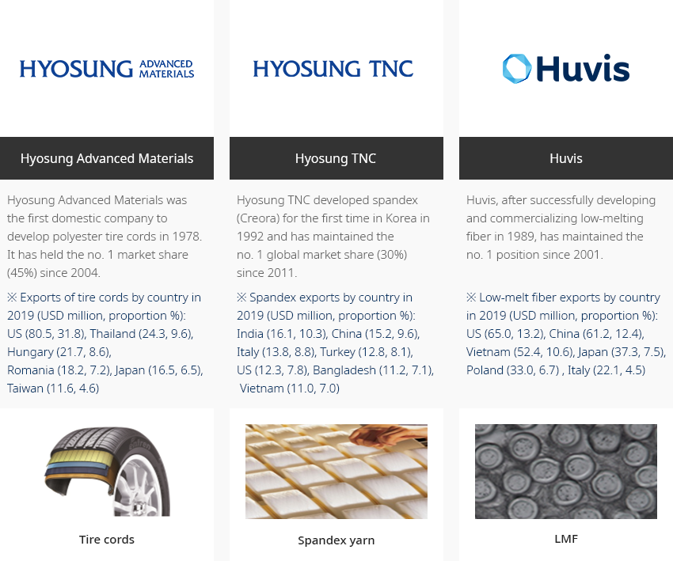
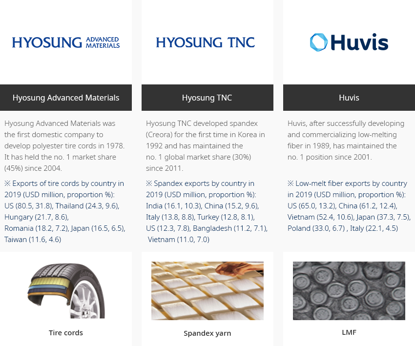
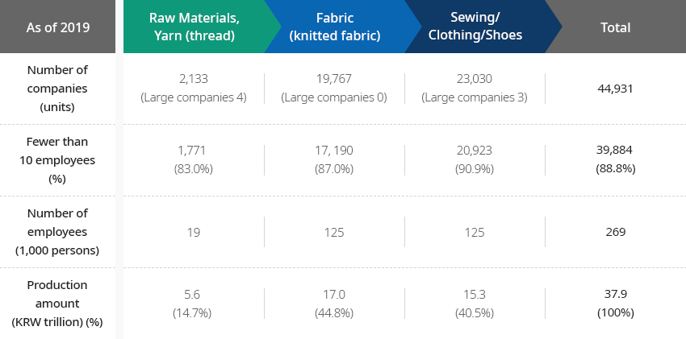
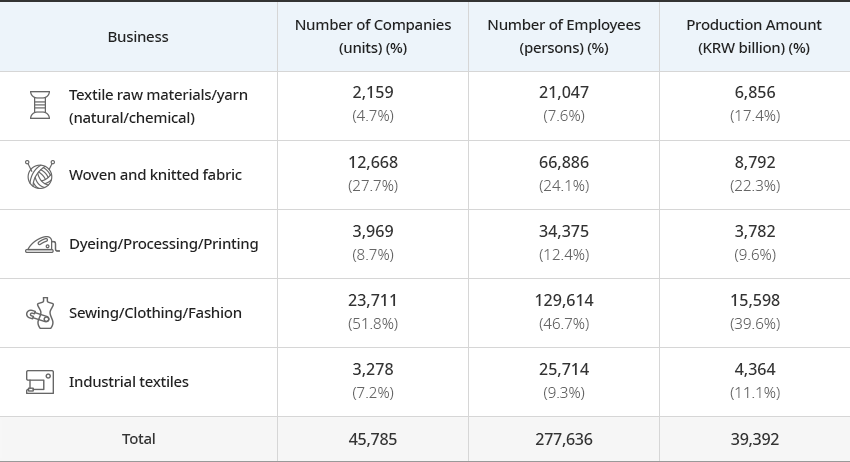
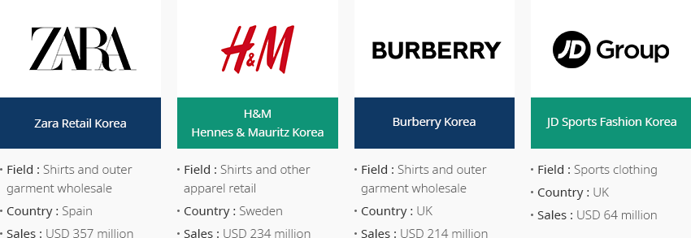
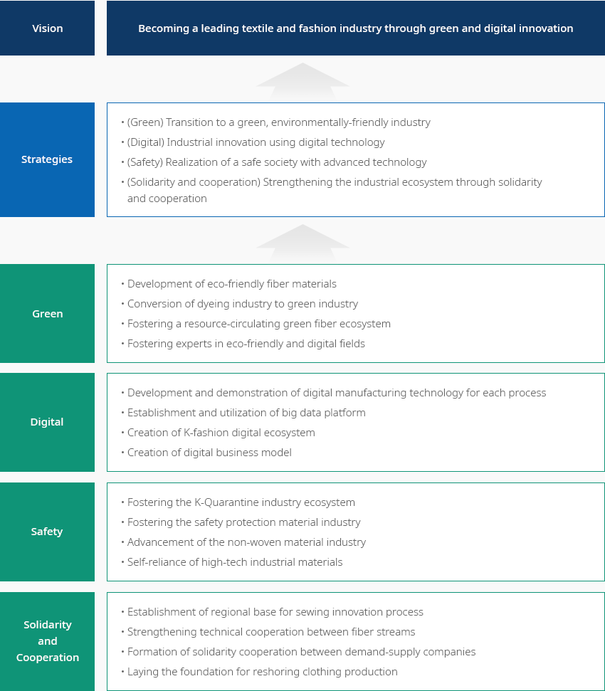
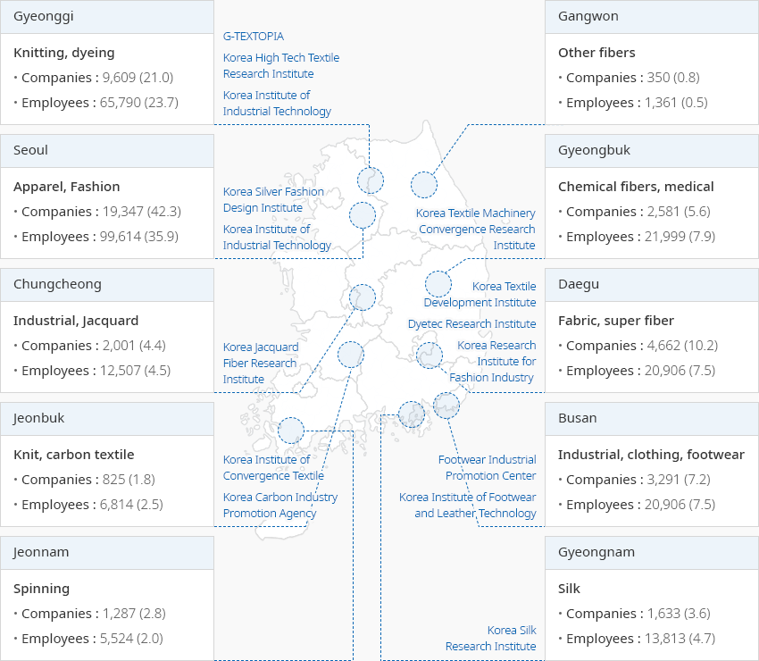

Fashion
- Home
- Why KOREA
- Industry
- Fashion
-
High Value-added Industry with a Large Front-to-Back Linkage Effect Through Convergence with Other Industries CloseHigh Value-added Industry with a Large Front-to-Back Linkage Effect Through Convergence with Other IndustriesKorea’s textile and fashion industry produces a large front-to-back linkage effect through convergence with other industries. Its production inducement coefficient and value-added rate are higher than the average of the manufacturing industries."Ripple Effects of the Textile Industry"Production Inducement Coefficient
- Manufacturing - 1.89
- Textile - 2.01
Added Value- Manufacturing - 35.87
- Textile - 41.24
 ※ Source: Statistics Korea, Korea Institute for Industrial Economics and Trade, Industry Research (December 2020)"No. 1 Textile Items in the World Produced in Korea"
※ Source: Statistics Korea, Korea Institute for Industrial Economics and Trade, Industry Research (December 2020)"No. 1 Textile Items in the World Produced in Korea"- Hyosung Advanced Materials - (Tire cords) Hyosung Advanced Materials was the first domestic company to develop polyester tire cords in 1978. It held the no. 1 market share (45%) since 2004. ※ Exports of tire cords by country in 2019 (USD million, proportion %): US (80.5, 31.8), Thailand (24.3, 9.6), Hungary (21.7, 8.6), Romania (18.2, 7.2), Japan (16.5, 6.5), Taiwan (11.6, 4.6)
- Hyosung TNC - (Spandex yarn) Hyosung TNC developed spandex (Creora) for the first time in Korea in 1992 and has maintained the no. 1 global market share (30%) since 2011. ※ Spandex exports by country in 2019 (USD million, proportion %): India (16.1, 10.3), China (15.2, 9.6), Italy (13.8, 8.8), Turkey (12.8, 8.1), US (12.3, 7.8), Bangladesh (11.2, 7.1), Vietnam (11.0, 7.0)
- Huvis - (LMF) Huvis, after successfully developing and commercializing low-melting fiber in 1989, has maintained the no. 1 position since 2001. ※ Low-melt fiber exports by country in 2019 (USD million, proportion %): US (65.0, 13.2), China (61.2, 12.4), Vietnam (52.4, 10.6), Japan (37.3, 7.5), Poland (33.0, 6.7) , Italy (22.1, 4.5)
-
Powerful Key Industry With a Strong Production Base OpenPowerful Key Industry With a Strong Production BaseThe number of textile companies in the domestic textile and fashion industry was 44,931, accounting for 10.2% of the manufacturing industry, and the number of employees was 268,918 (6.5%) in 2019. The number of textile companies in the overall textile industry including related industries was 288,953, and the number of employees was 804,839. These numbers demonstrate that it is one of Korea's key industries.
- About 90% of companies have fewer than 10 employees. Large and medium-sized companies are responsible for the production and supply of textile raw materials, and SMEs procure raw materials and produce fabrics and clothing.
"Status of the Textile and Fashion Industry"Status of the Textile and Fashion Industry As of 2019m, Number of companies(units), Fewer than 10 employees (%), Number of employees (1,000 persons), Production amount (KRW trillion) (%) As of 2019 Raw Materials, Yarn (thread) Fabric (knitted fabric) Sewing/Clothing/Shoes Total Number of companies (units) 2,133 (Large companies 4) 19,767(Large companies 0) 23,030(Large companies 3) 44,931 Fewer than 10 employees (%) 1,771(83.0%) 17, 190(87.0%) 20,923(90.9%) 39,884(88.8%) Number of employees (1,000 persons) 19 125 125 269 Production amount (KRW trillion) (%) 5.6(14.7%) 17.0(44.8%) 15.3(40.5%) 37.9(100%)
※ Number of companies, number of employees: Statistics Korea, Survey on Businesses in Korea (1 person or more) / Production amount: Statistics Korea, Survey on Mining and Manufacturing Industries (10 persons or more)The industry has recorded a trade surplus of USD 304.7 billion over the past 43 years (1977-2019), driving the economic development of Korea as well as other industries. It recorded a surplus of USD 10 billion or more annually from 1987 to 2001, since becoming the only industry that recorded exports of USD 10 billion for the first time in 1987.
When including related industries, such as wholesale and retail, this industry hires as many as 830,000 persons. It is a representative high-value-added industry with a high number of jobs. The expansion of the textile and fashion industry can lead to expansion of production and investment, which can lead to the creation of new jobs and employment outcome."Trend Changes in Exports/Imports of the Korean Textile Industry"Trend Changes in Exports/Imports of the Korean Textile Industry Category, Year ※ Source : KITA -
Stream Structure of the Korean Textile and Fashion Industry OpenStream Structure of the Korean Textile and Fashion IndustryThe textile and fashion industry shows a structure in which production plants are subdivided from the upstream (textile raw materials/textile yarn), the middle stream (fabric and dyeing/processing), to downstream (clothing and other textile products). In terms of production value, sewing/clothing/fashion sectors account for 40% of the total output, followed by woven and knitted fabric (22.3%) and textile raw materials/yarns (17.4%)."Stream Structure of the Korean Textile and Fashion Industry"(As of 2018)
Stream Structure of the Korean Textile and Fashion Industry Business, Number of Companies(units) (%), Number of Employees (persons) (%), Production Amount (KRW billion) (%) Business Number of Companies(units)
(%)Number of Employees (persons)
(%)Production Amount (KRW billion)
(%)Textile raw materials/yarn (natural/chemical) 2,159
(4.7%)21,047
(7.6%)6,856
(17.4%)Woven and knitted fabric 12,668
(27.7%)66,886
(24.1%)8,792
(22.3%)Dyeing/Processing/Printing 3,969
(8.7%)34,375
(12.4%)3,782
(9.6%)Sewing/Clothing/Fashion 23,711
(51.8%)129,614
(46.7%)15,598
(39.6%)Industrial textiles 3,278
(7.2%)25,714
(9.3%)4,364
(11.1%)Total 45,785 277,636 39,392
※ Source: Statistics Korea -
Global Fashion Brands Actively Entering the Korea Market OpenGlobal Fashion Brands Actively Entering the Korea MarketGlobal fashion companies are entering the Korean market to target Korean and Chinese consumers. Foreign investment tends to be concentrated in the distribution of global fashion brands rather than apparel manufacturing. Global SPA brands, such as Zara and H&M, are investing in joint ventures.(As of 2019)
-
Zara Retail Korea
- Field : Shirts and outer garment wholesale
- Country : Spain
- Sales : USD 357 million
-
H & M Hennes & Mauritz Korea
- Field : Shirts and other apparel retail
- Country : Sweden
- Sales : USD 234 million
-
Burberry Korea
- Field : Shirts and outer garment wholesale
- Country : the UK
- Sales : USD 214 million
-
JD Sports Fashion Korea
- Field : Sports clothing
- Country : UK
- Sales : USD 64 million
※ Source: Ministry of Trade, Industry and Energy, Financial Supervisory Service Electronic Disclosure System -
Zara Retail Korea
-
Advancing the Industrial Structure Through Digital Transformation OpenAdvancing the Industrial Structure Through Digital TransformationThe Korean government, on the occasion of the 34th Textile Day in November 2020, announced the Korean version of the New Deal for the textile and fashion industry. While facing a “nut-cracker” situation (witnessing developing countries catch up and an increasing technological gap with developed countries), the strategies are aimed at actively responding to environmental changes, such as GVC reorganization and digital transformation, and using them as opportunities to take a new leap forward. The government plans to invest a total of KRW 160 trillion in projects (KRW 114.1 trillion from the government) and create 1.901 million jobs."New Deal Implementation Strategy"Vision - Becoming a leading textile and fashion industry through green and digital innovationImplementation Strategy
- (Green) Transition to a green, environmentally-friendly industry
- (Digital) Industrial innovation using digital technology
- (Safety) Realization of a safe society with advanced technology
- (Solidarity and cooperation) Strengthening the industrial ecosystem through solidarity and cooperation
Green- Development of eco-friendly fiber materials
- Conversion of dyeing industry to green industry
- Fostering a resource-circulating green fiber ecosystem
- Fostering experts in eco-friendly and digital fields
Digital- Development and demonstration of digital manufacturing technology for each process
- Establishment and utilization of big data platform
- Creation of K-fashion digital ecosystem
- Creation of digital business model
Safety- Fostering the K-Quarantine industry ecosystem
- Fostering the safety protection material industry
- Advancement of the non-woven material industry
- Self-reliance of high-tech industrial materials
Solidarity and cooperation- Establishment of regional base for sewing innovation process
- Strengthening technical cooperation between fiber streams
- Formation of solidarity cooperation between demand-supply companies
- Laying the foundation for reshoring clothing production
-
Collaboration between Regions and Industries Make Smooth Production Networks OpenCollaboration between Regions and Industries Make Smooth Production NetworksThe textile fashion industry is building specialized textile streams for each regional production area, thereby revitalizing industry-university-research clusters. It is possible not only to revitalize the local economy through fostering regional specialities, but also to promote structural advancement through win-win cooperation between regions.
- Seoul·Gyeonggi : Digital conversion through smart factory construction and IT convergence textile, knitting, dyeing and processing fields
- Daegu·Gyeongbuk : Cultivation of cutting-edge industrial textiles, ICT linkage and eco-friendly industry to respond to future markets
- Busan·Gyeongnam : High value-added marine convergence materials, sewing-ICT convergence crisis response type special workwear (prevention goods, military uniforms)
- Chungcheong·Jeolla : Increase productivity through IT convergence manufacturing innovation and promote the development of technological convergence industrial textiles, such as safety protection products
"Number of Companies and Employees Working in the Regionally Specialized Textile Products and Textile and Fashion Industry"(As of 2019)-
Gyeonggi: Knitting, dyeing(G-TEXTOPIA, Korea High Tech Textile Research Institute, Korea
Institute of Industrial Technology)
- Companies: 9,680(21.0)
- Employees: 65,790(23.7)
-
Gangwon: Other fibers
- Companies: 350(0.8)
- Employees: 1,361(0.5)
-
Seoul: Apparel, Fashion(Korea Silver Fashion Design Institute, Korea Institute of
Industrial Technology)
- Companies: 19,347(42.3)
- Employees: 99,614(35.9)
-
Gyeongbuk: Chemical fibers, medical(Korea Textile Machinery Convergence Research
Institute)
- Companies: 2,581(5.6)
- Employees: 21,999(7.9)
-
Chungcheong: Industrial, Jacquard(Korea Jacquard Fiber Research Institute)
- Companies: 2,001(4.4)
- Employees : 12,507(4.5)
-
Daegu: Fabric, super fiber(Korea Textile Development Institute, Dyetec Research Institute,
Korea Research Institute for Fashion Industry )
- Companies: 4,662(10.2)
- Employees: 20,906(7.5)
-
Jeonbuk: Knit, carbon textile(Korea Institute of Convergence Textile, Korea Carbon
Industry Promotion Agency)
- Companies: 825(1.8)
- Employees: 6,814(2.5)
-
Busan: Industrial, clothing, footwear(Footwear Industrial Promotion Center, Korea
Institute of Footwear and Leather Technology)
- Companies: 3,291(7.2)
- Employees: 20,906(7.5)
-
Jeonnam: Spinning
- Companies: 1,287(2.8)
- Employees: 6,814(2.5)
-
Gyeongnam: Silk(Korea Silk Research Institute)
- Companies: 1,633(3.6)
- Employees: 12,813(4.7)
※ Source: Statistics Korea, “National Statistical Portal“ Survey on Businesses (1 or more employee)
※ Note: Calculation of specially produced fibers, companies (number of companies), employment (number of employees); The percentages are indicated in parentheses.
※ Data cooperation: Korea Textile Industry Association


Invest KOREA
Recommendation on Locations
Industrial complex information
[Daegu Metropolitan City Seo-gu] Daegu Dyeing General Industrial Complex
(Regeneration Business District)
Click [Go to Detailed Information] to go to the relevant information screen of
Smart K-Factory service of Industrial Complex Corporation.
-
Complex nameDaegu Dyeing General Industrial Complex (Regeneration Business District)
-
Initial designation date1980.11.28
-
Designated area(m2)849,648
-
ManagementDaegu Dyeing Industrial Corporation
-
Nearby RailwaySeodaegu Station
-
Distance from station(km)2
-
Nearby AirportDaegu International Airport
-
Distance from airport(km)10
-
Industrial water Supply capacity(ton/day)120(㎥/day)
-
Affiliation local governmentDaegu Metropolitan City Seo-gu
-
Population2,428,228
Industrial complex information
[Gyeongsangbuk-do Yeongju City] Ban-gu Specialized Agricultural Industrial
Complex
Click [Go to Detailed Information] to go to the relevant information screen of
Smart K-Factory service of Industrial Complex Corporation.
-
Complex nameBan-gu Specialized Agricultural Industrial Complex
-
Initial designation date2010.08.03
-
Designated area(m2)299,354
-
ManagementGyeongsangbuk-do Yeongju City
-
Nearby RailwayYeongju Station
-
Distance from station(km)9
-
Nearby AirportWonju Airport
-
Distance from airport(km)115
-
Industrial water Supply capacity(ton/day)10(㎥/day)
-
Affiliation local governmentGyeongsangbuk-do Yeongju City
-
Population103,652
Industrial complex information
[Gyeongsangbuk-do Gyeongsan City] Gyeongsan 1st General Industrial
Complex
Click [Go to Detailed Information] to go to the relevant information screen of
Smart K-Factory service of Industrial Complex Corporation.
-
Complex nameGyeongsan 1st General Industrial Complex
-
Initial designation date1990.12.10
-
Designated area(m2)1,577,414
-
ManagementGyeongsan Industrial Complex Corportation
-
Nearby RailwayGyeongsan Station
-
Distance from station(km)15
-
Nearby AirportDaegu International Airport
-
Distance from airport(km)24
-
Industrial water Supply capacity(ton/day)7000(㎥/day)
-
Affiliation local governmentGyeongsangbuk-do Gyeongsan City
-
Population262,300
Industrial complex information
[Gyeonggi-do Yangju City] Hongjuk General Industrial Complex
Click [Go to Detailed Information] to go to the relevant information screen of
Smart K-Factory service of Industrial Complex Corporation.
-
Complex nameHongjuk General Industrial Complex
-
Initial designation date2008.03.25
-
Designated area(m2)585,700
-
ManagementKorea Industrial Complex Corporation
-
Nearby RailwayDongducheon Station
-
Distance from station(km)21
-
Nearby AirportGimpo International Airport
-
Distance from airport(km)43
-
Industrial water Supply capacity(ton/day)3137(㎥/day)
-
Affiliation local governmentGyeonggi-do Yangju City
-
Population229,052
Industrial complex information
[Daegu Metropolitan City Seo-gu] Seodaegu Industrial Complex (Renewable
Zone)
Click [Go to Detailed Information] to go to the relevant information screen of
Smart K-Factory service of Industrial Complex Corporation.
-
Complex nameSeodaegu Industrial Complex (Renewable Zone)
-
Initial designation date2013.12.30
-
Designated area(m2)2,661,821
-
ManagementSeodaegu Industrial Complex Association
-
Nearby RailwaySeodaegu Station
-
Distance from station(km)3
-
Nearby AirportDaegu International Airport
-
Distance from airport(km)20
-
Industrial water Supply capacity(ton/day)18807(㎥/day)
-
Affiliation local governmentDaegu Metropolitan City Seo-gu
-
Population2,428,228
Industrial complex information
[Gyeonggi-do Dongducheon City] Sangbong-am General Industrial
Complex
Click [Go to Detailed Information] to go to the relevant information screen of
Smart K-Factory service of Industrial Complex Corporation.
-
Complex nameSangbong-am General Industrial Complex
-
Initial designation date1995.02.14
-
Designated area(m2)54,522
-
ManagementGyeonggi-do Dongducheon City
-
Nearby RailwayDongducheon Station
-
Distance from station(km)2
-
Nearby AirportGimpo International Airport
-
Distance from airport(km)76
-
Industrial water Supply capacity(ton/day)100(㎥/day)
-
Affiliation local governmentGyeonggi-do Dongducheon City
-
Population93,968